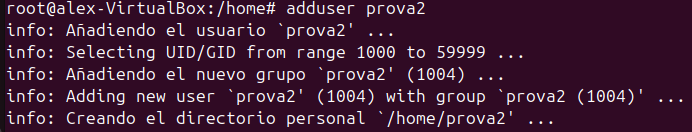
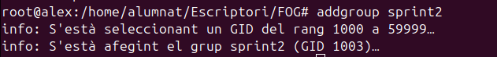
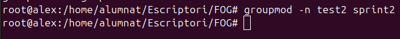
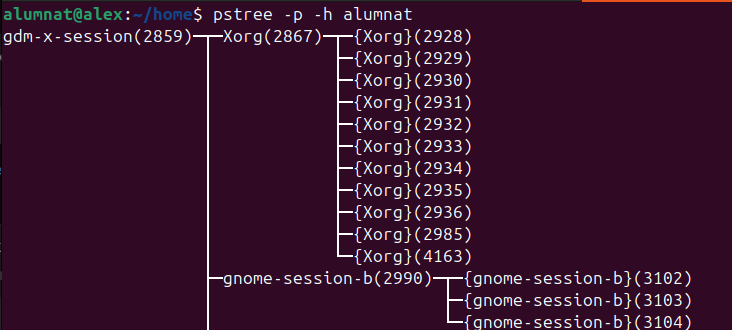

Sprint2
GESTIÓ D'USUARIS I GRUPS:
A Ubuntu, els usuaris i grups són essencials per gestionar els permisos i l'accés als recursos del sistema. Els usuaris compten cadascun amb el seu espai i configuració, mentre que els grups agrupen usuaris amb permisos similars per facilitar la gestió. Això permet controlar qui pot accedir o modificar certs fitxers o directoris.
Directoris
1--/etc/shadow
Guarda informacio de les contrasenyes dels usuaris en format xifrat i altres paràmetres de seguretat(expiració de la contrasenya...) El segon camp pot conteni * que significa que el compte esta totalment desavilitat o ! indica que està deshabilitat per accedir-hi amb contrasenya. Tambe es important saber que el camp "epoch" representa la data de l'últim canvi de contrasenya de l'usuari.
2--/etc/passwd
Conté la llista d’usuaris del sistema, el nom d’usuari, l’ID d’usuari (UID), l’ID de grup (GID), la carpeta personal i el shell per defecte...
3--/etc/gshadow
Emmagatzema informació xifrada sobre els grups i les seves contrasenyes, així com els administradors de cada grup i els usuaris amb accés al grup.
4--/etc/grup
Inclou la llista de grups del sistema amb el nom de cada grup, l'ID de grup (GID) i els usuaris que en formen part.
Comandes bàsiques
Creació d'usuaris
Les maneres més comunes de crear usuaris en Ubuntu són: (adduser, adduser) adduser te fa una sèrie de preguntes inicials i user add no . 
Per a elimina un usuari usem deluser podem usa sudo deluser --remove-home (usuari) para elimina tame el directori personal

Creació de grups
Per a crear un grup he usat addgroup
I per a eliminarlo delgroup

Modificasio
Crearem un altre grup 
I li cambiarem lo nom a test2 en la comanda: 
Una altra modificació seria canvia la contrasenya amb passwd

Ara assigno l'usuari pere com a administrador del grup jocs amb gpasswd. Després, afegeixo sprinttt al grup jocs amb usermod. Finalment, verifico que sprinttt és al grup /etc/group amb grep

Verificacio
Comprovarem el canvi de nom:
Paraules de pas als grup
He canviat la contrasenya del grup grupsprint utilitzant gpasswd i després m'he unit al grup amb newgrp.


GESTIÓ DE PERMISOS
Permisos normals
He creat el fitxer ex1.txt i ja existia ex2.txt. Després he comprovat els permisos inicials.
He canviat els permisos de ex1.txt a 640 per donar només lectura i escriptura a l'usuari i lectura al grup.
He afegit permisos d'execució per al grup (g+x) al fitxer ex1.txt.

Finalent he aplicat permisos d'execució de manera recursiva a tots els fitxers dins de la carpeta testsprint2.

Umask
Umask defineix els permisos per defecte dels fitxers i directoris que es creen.
- Canviar la màscara temporalment

- Modificar la màscara global
Per establir un valor de umask que s'apliqui a tots els usuaris:
Editar /etc/login.defs:
Comprovasio: Reiniciem la maquina

Permisos especials
ACLs
Esta comanda modifica els permisos ACL (Access Control List) que lleva tots els permisos a l'usuari prova3 al directori prova.
La comanda getfacl que es fa servir per consultar els permisos ACL
GESTIÓ DE PROCESSOS
-
top
Mostra en temps real els processos en execució, el seu consum de CPU, memòria, i altres detalls del sistema.(monitoritzar l'estat general del sistema)
-
pstree -p -h alumnat:
Mostra els processos en forma d'arbre jeràrquic. -p: Inclou els identificadors dels processos (PIDs). -h: Ressalta el procés en execució actual.  -
ps aux | grep profe | wc -l:
ps aux: Llista tots els processos del sistema. grep profe: Filtra els processos que contenen "profe". wc -l: Compta el nombre tel nombre de processos relacionats amb profe.
-
fg %1:
Porta un procés aturat (en segon pla) al primer pla. %1 és el número del treball que es vol restaurar.

5.kill -9 05574:
Mata un procés de manera immediata.
-9:Forçar la terminació del procés amb el PID 05574.
6.jobs:
Llista els processos aturats o en segon pla.
Teoria de Prioritat dels processos
Els processos tenen prioritats que van del -20 (màxima prioritat) al 19 (mínima prioritat). Per defecte, la prioritat és 0.
7.renice -n -19 -p 10099:
Modifica la prioritat d'un procés existent.
Exemple: renice -n -19 -p 1234 ajusta el procés amb PID 1234 a la màxima prioritat (-19).

Gestio de memoria

PARTICIONS
Primer usarem fdisk -l que llista els discos disponibles al sistema.

Farem una partició mbr amb les opcions per defecte
Utilitzarem mkfs.ext4 per crear un sistema de fitxers EXT4 al dispositiu /dev/sdb1
Amb tune2fs -l, es mostra el nombre de blocs (524288), mida per bloc (4096 bytes) i blocs per grup (32768).
Afegirem una linia per munta automaticamt /dev/sdb1
Els 0 al final signifiquen que no estarà inclòs en les còpies de seguretat (penúltim) i que no es comprovarà a l'arrancada (últim).
COMPARTIR CARPETES
Per a compartir en samba necessitarem insta-la samba nautilus-share.
Podem fer-ho per interfície però sol dona errors i així que u farem per terminal.
Configurem el fitxe /etc/samba/smb.conf per a compartir la carpeta partició1.
Comprovarem que el servei està en funcionament i que no dona errors usant la comanda systemctl status smbd
Crearem un usuari de prova
Client
COPIES DE SEGURETAT
Conceptes teòrics
Establir una bona política de còpies de seguretat
- Completes (Sempre que pugueu, una completa és el millor)
- Avantatges:
- Per a restaurar una còpia completa només cal la última completa.
-
Desavantatges:
- Ocupa més espai.
-
Diferencials: Fa una còpia de la diferència en l'última còpia completa per anar actualitzant.
- Avantatges:
- Ocupa menys espai.
-
Desavantatges:
- Per a restaurar necessites la última completa i la última diferencial.
-
Incrementals
- Avantatges:
- Ocupa encara menys espai.
- Desavantatges:
- Per a restaurar necessites la última completa, la última diferencial i totes les incrementals.
Programes en interficie
He triat el programa de còpies Deja Dup
És molt senzill d'utilitza triarem usuari i excepcions
Seleccionem on la volem guarda (local, Google Drive, OneDrive... ) ió he triat Google Drive.
Per a una major seguretat podem posar una contrasenya
Aquí podem veure la còpia la data i tenim l'opció de restaurar o de visualitzar.
Comandes
| Comanda | Funció principal | Ús comú | Exemple d'ús |
|---|---|---|---|
cp |
Es una copiar fitxers o directoris | Copiar fitxers en local | cp origen destí |
rsync |
Sincronitzar fitxers i directoris | Sincronitzar dades locals o remotes | rsync -av origen destí |
dd |
Copiar i convertir dades a baix nivell | Crear imatges de discos o còpies binàries | dd if=origen of=destí bs=blocksize |
cp: es una copia simple no inteligen que no mira res i es fa en local
rsync: és una còpia intel·ligent que només còpia els modificats i es pot fer en màquines remotes via SSH.
dd: no és pròpiament per fe còpies d'arxius, treballa en local, treballa a escala de bloc. S'utilitza molt per a clonació de discos i particions.
També la podem usar per esborrar millor els arxius
AUTOMATITSACIO
4.1 Teoria
Diferències entre cron i anacron
En sistemes operatius anteriors, aquestes eines funcionaven per separat. Ara estan integrades i treballen conjuntament per automatitzar tasques.
Quan utilitzar cron o anacron
anacron:- És útil quan l'ordinador pot estar apagat.
- Quan l'ordinador s'encén,
anacrondetecta si hi ha tasques programades que no s'han executat perquè l'equip estava apagat i les executa. -
S’utilitza per automatitzar tasques a nivell general o del sistema operatiu.
-
cron: - S'utilitza principalment per executar una acció molt concreta a una hora determinada.
- És recomanable quan sabem que l'ordinador estarà encès en el moment de l'execució programada.
Configuració de cron
cron ofereix dues opcions principals:
1. Arxiu global /etc/crontab:
- S'utilitza per definir tasques globals per a tots els usuaris del sistema.
- Crontab per a usuaris específics:
- S'utilitza la comanda
crontab -e -u USUARIper definir tasques específiques per a un usuari concret.
A més, dintre del directori /etc/cron, hi ha carpetes preparades per executar tasques automàticament.